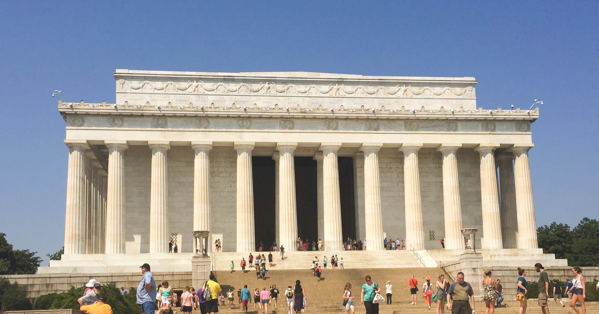

August 5, 2015 Lincoln Memorial, Washington D.C
Lincoln Memorial
This photography is on the top of my favorites that I wanted to share. Here I wanted to capture the history with in. The first think to Remember when working with a phone camera make sure the phone is horizontal.That way you will get the whole object or scenery in the photograph. For this picture I stood right in front of the memorial at a far distaance and played around with angles to get the best shot. In this case it was kinda difficult because you had to consider that there will be people in the way.